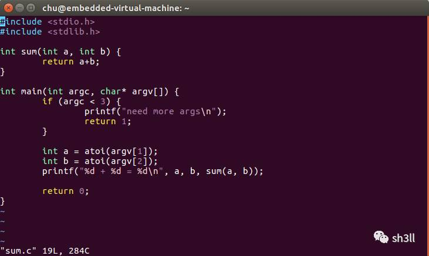
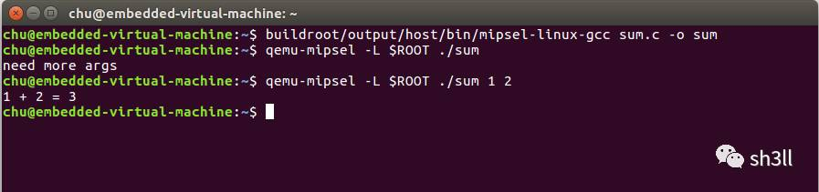
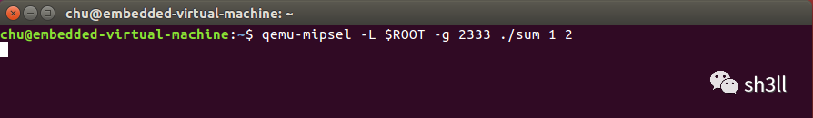
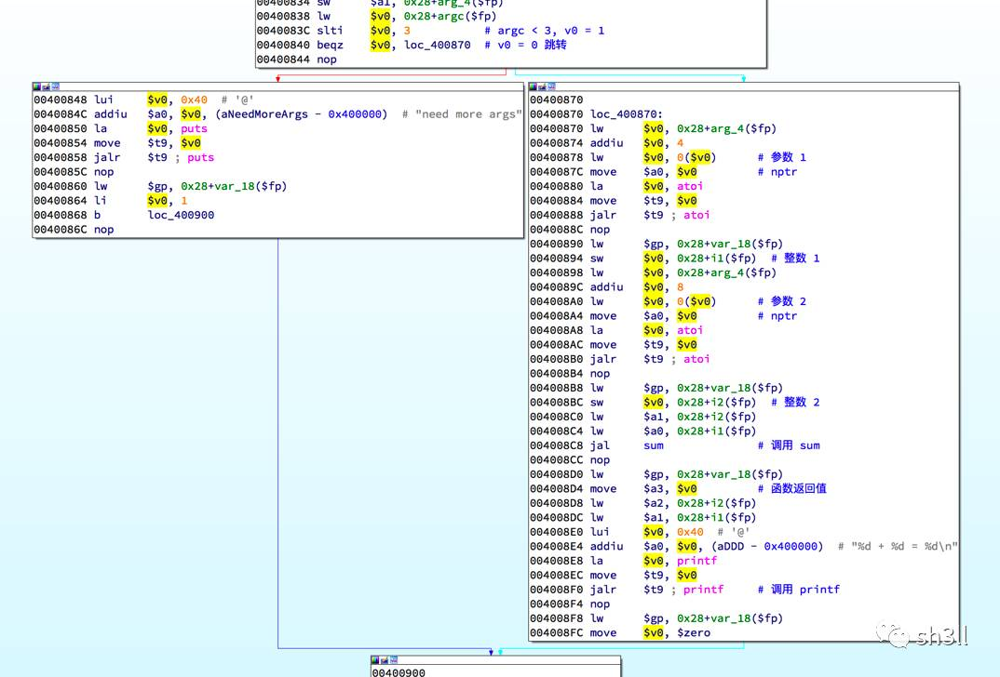
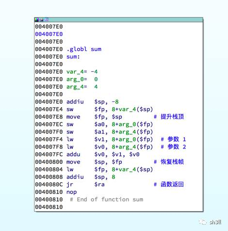
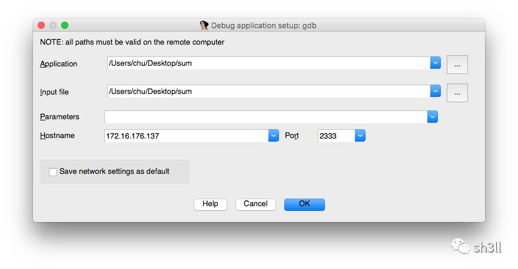
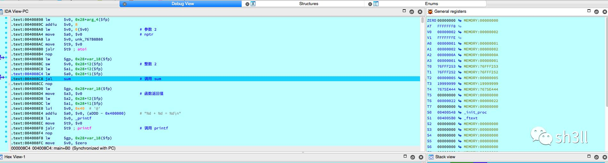

MIPS 初探
这是一篇纯笔记文，很枯燥 ：）
1. MIPS32 汇编
1.1 寄存器
MIPS 中大量使用寄存器，原因是寄存器的存取可以在一个时钟周期内完成，同时也简化了寻址方式。MIPS 的指令中除加载/存储指令外，都是使用寄存器或立即数作为操作数的。寄存器可分为两类：通用寄存器与特殊寄存器。
1.1.1 通用寄存器（GPR）
MIPS32 架构中定义了 32 个通用寄存器，都是 32 位，使用 $0、$1 … $31 表示，也可以使用约定命名表示，如 $sp、$a0、$v0、$ra 等。下表显示了各个通用寄存器的约定用法。
| 编号 | 约定命名 | 约定用法 |
|---|---|---|
| 0 | zero | 始终为 0，常用于比较 |
| 1 | $at | 保留寄存器 |
| 2 ~ 3 | $v0 ~ $v1 | Values，保留表达式或函数的返回结果 |
| 4 ~ 7 | $a0 ~ $a3 | Arguments，作为函数的前 4 个参数 |
| 8 ~ 15 | $t0 ~ $t7 | Temporaries，供汇编程序使用的临时寄存器 |
| 16 ~ 23 | $s0 ~ $s7 | Saved values，子函数使用时需要先保存原寄存器的值 |
| 24 ~ 25 | $t8 ~ $t9 | Temporaries，供汇编程序使用的临时寄存器，补充 $t0 ~ $t7 |
| 26 ~ 27 | $k0 ~ $k1 | 保留，中断处理函数使用 |
| 28 | $gp | Gloabl pointer，全局指针 |
| 29 | $sp | Stack pointer，指向栈顶 |
| 30 | $fp | Frame pointer，保存栈指针 |
| 31 | $ra | Return address，返回地址 |
1.1.2 特殊寄存器
MIPS32 架构中定义了 3 个特殊寄存器，分别是 PC（程序计数器）、HI（乘除结果高位寄存器）和 LO（乘除结果低位寄存器）。
在进行乘法运算时，HI 和 LO 分别保存结果的高 32 位和低 32 位；在进行除法运算时，HI 保留余数，LO 存储商。
1.2 MIPS 指令集特点
MIPS 指令集特点如下：
- 固定 4 字节指令长度
- 内存中的数据访问（load/store）严格 4 字节对齐
- MIPS32 默认不把子函数的返回地址存放于栈中，而是存放在 $ra 中
- 分支延迟效应
需要着重理解的是分支延迟效应。
MIPS 采用了高度流水线，其中最重要的效应就是分支延迟效应。任何一个分支跳转语句后面的那条语句叫做分支延迟槽。实际上在程序执行到分支语句时，当它刚把要跳转到的地址填充好还没完成本条指令时，分支语句后面的那个指令就执行了。这是因为流水线效应，几条指令同时在执行，只是处于不同的阶段。分支延迟槽常用被利用起来完成一些参数初始化等相关工作。
mov $a0, $s2
jalr strchr
mov $a0, $s0
由于分支延迟效应的存在，strchr 函数的参数是来自第三行的 $s0，而不是第一行的 $a0。
2. 构建交叉编译与调试环境
2.1 编译 qemu
# source code
git clone git://git.qemu.org/qemu.gitcd qemu
git submodule init
git submodule update --recursive
# dependencies
sudo apt install libglib2.0 libglib2.0-dev
sudo apt install autoconf automake libtool
# build
cd qemu && ./configure
make
sudo make install
# test
ROOT=/home/chu/squashfs-root
cd $ROOT
qemu-mipsel -L $ROOT bin/ls
2.2 编译 buildroot
# source code
wget http://buildroot.uclibc.org/downloads/snapshots/buildroot-snapshot.tar.bz2
tar -xjvf buildroot-snapshot.tar.bz2
# dependencies
sudo apt install libncurses5-dev patch
# build
cd buildroot-snapshot && make clean && make menuconfig # target architecture -> mips little endian
# target architecture variant -> mips 32
# toolchain, kernal headers -> your linux machine kernel version
make
2.3 调试
qemu 可以开启 gdb 远程调试，通过 IDA 添加 remote debugger 可以很方便的进行调试。
3. 实际调试过程
编写测试代码如下：

编译与测试：

开启 gdb server：

IDA 中静态分析：


IDA 远程调试：


4. 参考
- 《揭秘家用路由器 0day 漏洞挖掘技术》
- MIPS 指令特点
- MIPS32 指令集架构简介